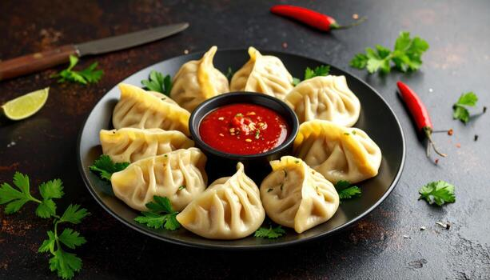

Home
MoMo Recipes

Description
MOMO is the very popular dish in Nepal.
Ingredients
- Wheat Flour - 1 kg
- Pork Keema - 500 gm
- Onion(finely chopped) - 500 gm
- Ginger(paste) - 20 gm
- Msg - 10 gm
- Salt - 10 gm
- Oil - 20 ml
- Scallion - 100 gm
- Make a dough out of wheat flour and put it in the refrigerator for 15 minutes
- Mix all other the ingredients togethre very well
- Make ready a momo steaming pot and boil water.
- Make small roti out of the dough with rolling pin
- Fill the ingredients in the small roti and wrap it
- Now fill the momo steaming basket and put the basket inside the steaming pot and wait for 15 minutes.
- After 15 minutes your momo is ready to eat. Ramrari Khanus la. Enjoy your momo.